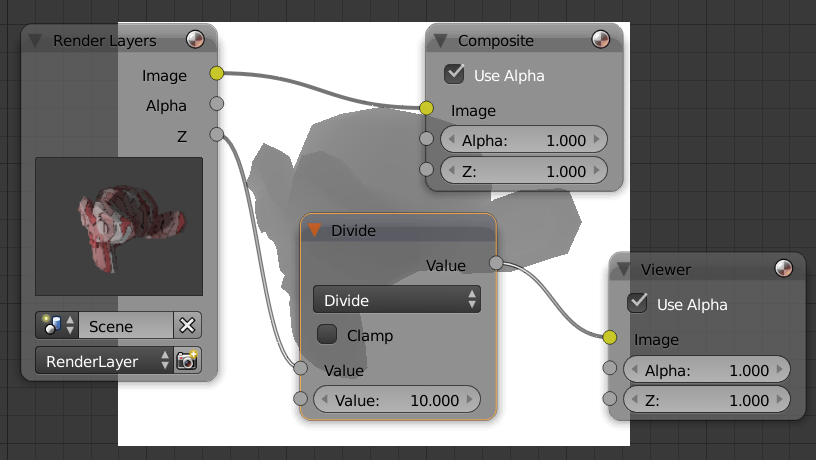
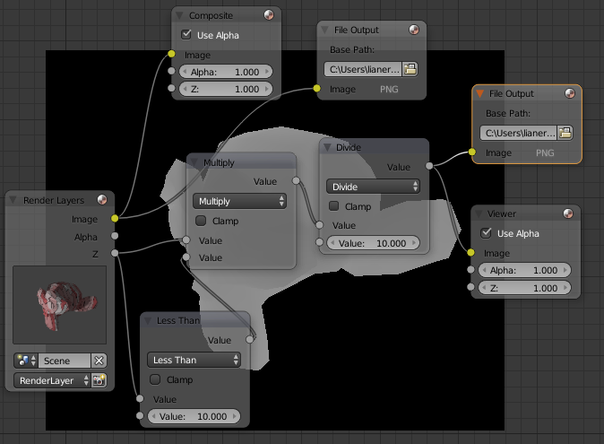
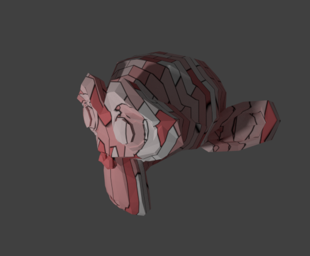
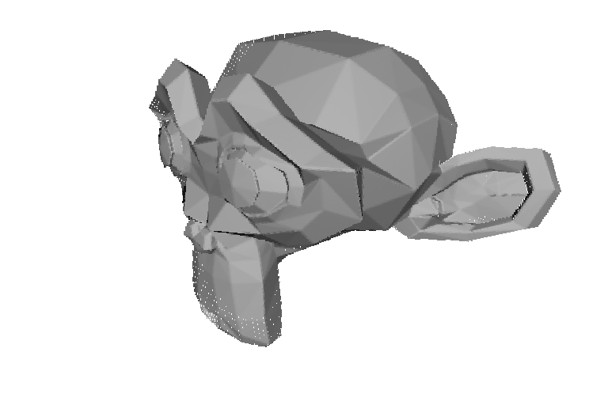

RGB-D数据集的合成
文章目录
在做三维重建的时候，经常需要用到一些RGB-D数据集来进行实验。而很多时候需要比较特殊的RGB-D数据，通过Kinect等深度设备获取的RGB-D数据往往很难达到理想的要求，而使用合成数据集则能够任意的构造数据集。
之前用过一个RGB-D设备仿真工具：blensor，但是感觉不怎么好用，主要是RGB相机和深度相机很难保持一致，生成的rgb image和depth map很难配准。其次就是不知为何，导出的PPM图片没法在Photoshop中正常查看，并且深度图是反的。后面就一直用我自己写的LtRay来生成RGB和Depth，效果很好，不过可惜的是我写的LtRay不支持一些高级特性，满足不了一些要求。今天又探索了一种深度图的生成方法：采用blender的Compositing node来同时渲染RGB和Depth。
首先我们知道RGB的渲染是很容易的，给定好相机参数就行，关键在于Depth。好在Blender里面提供了z通道，可以转换成depth，步骤如下：
更新 2018年7月16日
目前blender进行了更新，z通道在Render Layers上面改名为了Depth。
此外，因为blender提供了radiance hdr的输出选项，所以不需要经过相除已经相减等步骤，直接把depth输出为radiance hdr即可。
关于坐标的转换，可以设置好相机sensor的大小以及focal length，通过相机内参矩阵即可将图像上的位置转换成世界坐标位置。
其中x,y,z为世界坐标点的位置，i,j为像素位置，w,h为图像大小，c_w,c_h为图像中心，w_sensor, h_sensor为感光器大小，f为焦距，d为hdr图像对应像素的depth值。
原文 2017年3月19日
场景准备
设定好场景和相机，如Kinect v2的深度相机fov为70，分辨率为512 x 424。
节点编辑
切换到Node Editor并且使用Compositing Node，如图所示：
注意到Render Layers中有z通道，这里的z是原始数值。以相机为原点，相机方向为z轴组成一个坐标系，像素点的z值就是场景中对应点在相机坐标系中的z坐标值。添加一个Viewer查看z通道，显示全白，这很好理解，因为图片的范围是[0,1]，而距离往往大于这个范围。所以为了将深度渲染到图片上，需要先除以一个常量，把数值范围压缩到[0,1]，输出图片后再乘以这个常数就能复原。比如我这个场景中，模型位置为(0,0,0)，相机位置为(2,-2,1)，最大距离不超过3，把z除以10，就能映射到[0,1]了：

不过对于一般的深度设备，超过范围的像素点一般数值为0，所以需要做一下裁剪。此外，节点编辑器里面可以同时添加两个输出节点，把rgb和depth同时输出到文件，值得注意的是Depth应该输出为16bit灰度图。完整的节点如图所示：

进行渲染后，就能得到两幅输出的图：

并且这两张图是完全配准的。
生成点云
有了fov和深度图，点云就可以直接通过几何关系得出来。

文章作者 Lianera
上次更新 2017年03月19日